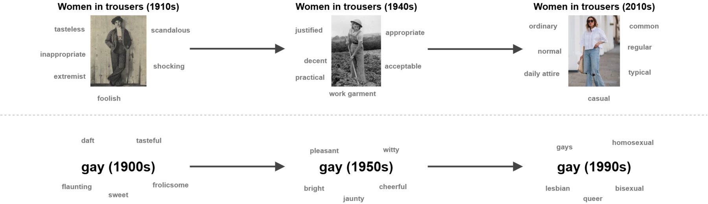
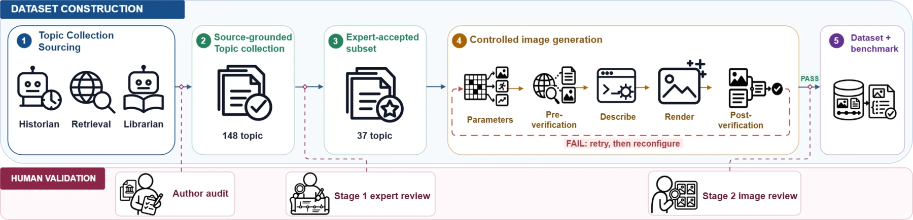
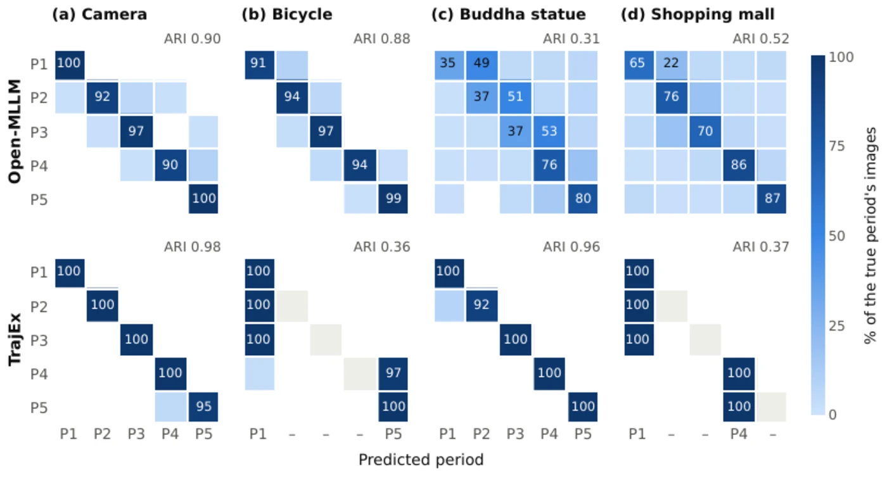

ICLR 2027 Submission · Under Double-Blind Review
VDBench: A Benchmark for Visual Diachronic Analysis of Historical Depictions
Recognisable subjects stay the same across history — but what they mean does not. VDBench evaluates whether computational methods can recover documented shifts in meaning from the changing visual context of historical depictions.
Code for corpus construction & image generation will be released upon acceptance.

Abstract
We introduce Visual Diachronic Analysis (VDA), a new computer vision challenge for studying how the visual context of a depicted subject or theme changes over time and how these changes relate to documented historical shifts in meaning. This raises the question to what extent such changes in meaning can be inferred computationally from historical depictions. To study such phenomena, we introduce VDBench, the first benchmark for VDA. In absence of available and sufficiently annotated historical image collections, we propose an unconventional approach: we construct a historically grounded synthetic benchmark dataset. We compile a source-grounded collection of human-centred diachronic themes and design a controlled text-to-image pipeline to generate plausible synthetic historical depictions. Domain experts confirm the suitability and plausibility of the data. We specify several computer vision tasks, propose a suitable evaluation methodology, and provide baseline methods and implementations as reference for future work. The dataset and an interactive explorer are available above. All code will be released upon acceptance.
Overview
Diachronic analysis originates in linguistics: historical semantics studies how a word's meaning shifts while its form stays fixed. Hamilton et al. showed this computationally — aligning word embeddings across decades reveals the neighbours of “gay” moving from cheerful and frolicsome toward homosexual and lesbian over the twentieth century.
VDA asks the analogous question of images. A subject — a person, an object, an activity — can remain visually recognisable across a century while the environment, activity, and co-occurring elements around it change, tracking a documented shift in social meaning. Women wearing trousers stayed exactly that; what moved was everything around them — from suffrage demonstrations, to wartime factories, to ordinary streets.
VDBench operationalises this with four coordinates:
- Identity
- the recurring subject that anchors a topic across every period (e.g. trousers as a garment, smoking as a practice).
- Where
- the environment — a factory floor, a street demonstration, a domestic kitchen — drawn from a closed scene vocabulary.
- What
- the activity and co-occurring elements in frame, plus an open caption describing the remaining observable context.
- When
- the year the depiction is set in, situating it within one period of the topic's trajectory.
A visual diachronic topic is a subject plus its documented sequence of periods; the ordered periods form its diachronic trajectory.
Contributions
- A new challenge. Visual Diachronic Analysis, with two concrete benchmark tasks: per-image context detection and diachronic trajectory discovery.
- The VDBench benchmark. A historically grounded topic collection with plausible synthetic depictions, built via semi-automatic retrieval and generation pipelines, plus a full evaluation framework.
- First baselines. Two zero-shot, open-weight reference implementations for both tasks, exposing how far current foundation models are from solving VDA.
Dataset & construction
Historical archives are rarely catalogued by diachronic topic, so VDBench starts from the historical record and works forward to images — the reverse of the usual dataset-construction direction.
| Generated images | 20,100 |
|---|---|
| Diachronic topics | 41 |
| Periods | 201 |
| Images per period | 100 |
| Topics retained after source audit | 148 / 266 |
| Documented period descriptions | 706 |
| Verified publications / webpages | 174 |
Construction pipeline
- Topic sourcing. An LLM plays Historian — proposing photographable topics, their periods, and claim-specific search terms — while a second Librarian role retrieves and links sources (Crossref, OpenAlex, Semantic Scholar, Open Library) that support each claim.
- Human filtering & expert review. Authors remove topics with unsupported claims or unverifiable sources (266 → 148). Humanities experts then review the remaining trajectories for historical validity before any image is generated.
- Controlled image generation. Each accepted period is specified by when (a year in-range), where (an environment), and what (an activity, plus an optional dated trend). Combinations are grounded against real photographic evidence with CLIP before a generation prompt is written and the image rendered.
- Verify & record. Every rendered image is re-checked with CLIP for the requested environment, activity, and trend, and regenerated until it passes. The full construction trace is retained as metadata.

Visual vocabularies: 669 environment classes (Places365 + SUN), 177 activity classes (ATUS, HETUS, MTUS), 74 dated-trend labels (Wikipedia photo categories). Generation: GPT-5.6 Sol prompts → Nano Banana Fast render → CLIP verification.
Two release splits are provided for supervised methods — a uniform split (every topic in train/val/test) and a topic-disjoint split (held-out topics, for generalisation). Full field-level documentation, download instructions, and split files live on the dataset page linked above.
Benchmark tasks
Task 1 reads the context out of a single image; Task 2 assembles many images — with either ground truth or Task-1 predictions — back into a topic's diachronic trajectory.
![Illustration of the two benchmark tasks on the women-in-trousers example: six periods from Dress reform (1850-1899) through Full acceptance (1980-2025) laid out on a timeline. Task 1, per-image context, takes a single image and predicts when (year 1892), where (street), what (shopping), and a caption. Task 2, topic and trajectory discovery, takes the image collection plus Task 1 readings and predicts a topic title (women in trousers), overall description, and an ordered trajectory of periods, e.g. period P5 titled Liberation era, ranged 1960-1979, describing trousers gaining acceptance in fashion and workplaces.](assets/img/tasks.webp)
Task 1 · Visual context detection
In a single image I.
Out estimated year, environment, activity, and a free-form caption of the visible context.
- When — year the depiction is set in
- Where — environment, closed vocabulary
- What — activity, closed vocabulary
- Caption — open-vocabulary context description
Task 2 · Topic & trajectory discovery
In an image set for one (identity-hidden) topic, with per-image context — ground truth or Task-1 predictions.
Out topic title & description, plus an ordered, described period sequence.
- Partition images into J periods
- Title, year range & description per period
- Chronological ordering of the trajectory
- No Task-2 ground truth or human input provided
Validation
Because the benchmark is synthetic by necessity, VDBench is validated at every stage: first by the authors, then by domain experts on the historical trajectories, then again by experts on the rendered images.
| Topics retained by author audit | 148 / 266 |
|---|---|
| Stage 1 · domain experts | 6 |
| Stage 1 · topics approved | 41 / 46 |
| Stage 1 · mean period rating (1–5) | 4.02 (median 4.00) |
| Stage 2 · image judgements | 501 |
| Stage 2 · judged plausible | 422 / 501 (84.2%) |
| Stage 2 · repeat-rating agreement | 38 / 53 (71.7%) |
Experts in gender studies, sociology, social anthropology, media and communication studies, literary studies, digital humanities, film archiving and theory, and migration history reviewed topics within their own expertise: judging historical validity and period boundaries in Stage 1, then — told the images were AI-generated — judging visual plausibility of a fixed sample per period in Stage 2.
Baselines & results
Two zero-shot, open-weight reference baselines, neither using VDBench for training, fine-tuning, or prompt selection. Open-MLLM applies Qwen3-VL-32B-Instruct directly to both tasks. TrajEx (Trajectory Explorer) is a specialised pipeline: a frozen EVA-CLIP encoder estimates the year, EVA-CLIP zero-shot matching predicts environment/activity, and change-point detection over time — refined with DINOv3 features — recovers the period structure.
| Output | Metric | Open-MLLM | TrajEx |
|---|---|---|---|
| Year | MAE (years) ↓ | 4.72 | 4.65 |
| Environment | Accuracy / macro-F1 ↑ | 0.26 / 0.21 | 0.27 / 0.26 |
| Activity | Accuracy / macro-F1 ↑ | 0.28 / 0.24 | 0.31 / 0.32 |
| Caption | BERTScore / MoverScore ↑ | 0.84 / 0.12 | 0.86 / 0.14 |
| Output | Metric | Open-MLLM | TrajEx |
|---|---|---|---|
| Image grouping | ARI / AMI ↑ | 0.56 / 0.66 | 0.79 / 0.87 |
| Period count | |Ĵ − J| ↓ | 0.63 | 1.17 |
| Period range | Temporal IoU ↑ | 0.46 | 0.63 |
| Matched order | Kendall's τ ↑ | 0.97 | 1.00 |

Limitations & future work
Expert validation supports the historical relevance of the compiled trajectories and the plausibility of the generated images, and the first baselines — built on state-of-the-art foundation models — show the task is far from solved. Planned extensions broaden geographic and cultural coverage, gather multiple independent expert reviews per topic, and incorporate licensed archival images where reliable annotations exist. On the methods side, promising directions include hybrid evaluation across synthetic and archival data, uncertainty-aware trajectory modelling, and text evaluation supported by multiple references and human assessment.